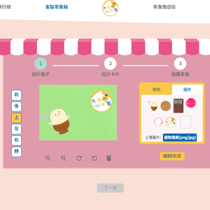

此專案運用軟體開發的模式，進行網站的製作。前期的研究分析使整個電商網站的流程順暢，在此網站可以進行多種消費模式及互動，也可以取得想要的資訊。讓使用者對國外的零食都有充分的了解。
目標使用者調查
我們一開始先分析會使用此網站的使用者有哪些，藉此發展網站所需的內容及功能。
Sitemap
針對使用者需求以及我們的討論下，發展出以下的功能，並且延伸每個功能會有的流程。
業務流程圖
有了功能後，開始分析每個功能在此網站內的活動流程，讓每個流程都能合理順暢的達到使用者的目的。
使用案例圖
我們利用使用案例圖，來分析使用者(包括後台營運人員) 會進行哪些案例情境，來讓我們針對這些案例做更細節的發展。
使用者故事
有了使用案例，我們藉由使用者故事，分析出在此案例中會發生的情境有哪些，作為功能開發上以及介面呈現上需要有此內容的依據，並且開發設計完要回過來做驗收測試。
- 我們的目標
- ．提供一個隨時都能買到世界各地零食的平台。
- ．利用網路及販賣機輕易地取得異國零食。
- ．透過評價系統，解決對異國零食的不了解。
- ．利用豐富的互動性，打造趣味的使用體驗。
介面與互動設計
- 搜尋bar可以從任何頁面搜尋後進到商品列表。
- 進到商品列表自動篩選出搜尋結果。
- 點選預購卡片會從上面往下滑。
- 篩選零食種類左側會對應種類做變換。
- hover零食會雷達顯示該零食的口味分數。
- 星等會隨著分數不同而變化。
- 可以再列表就將商品加入購物車或收藏。
- 點選排行左側藍色圈圈會跑到對應的數字上。
- 右側商品資訊會隨著排行做變換。
- 可以再排行直接看評價、加入購物車及收藏。

- 可以為箱子每個面進行客製。
- 利用直覺的拖曳功能減少操作難度。
- 點選編輯完成後下一步按鈕才顯示能按，防止誤按。